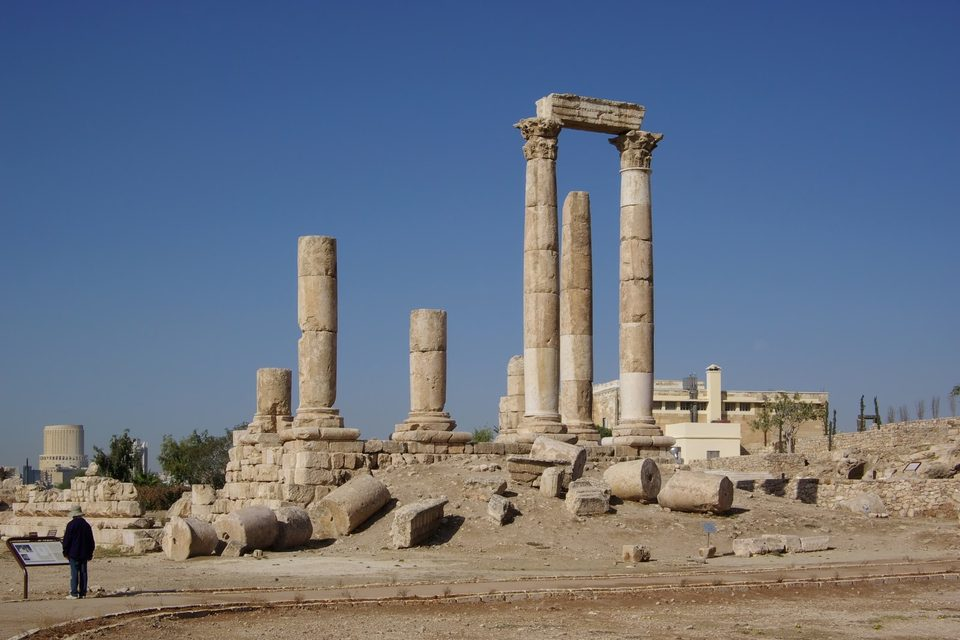

Jordan · Amman
Amman Citadel audio guide
8 stops · 10 min
This guide is free
Every recorded stop plays here.
Roman temple and Umayyad palace above Amman. Listen here, or get the Earwise app to play as you walk.
Stops
- 1
The hill above the city
Just inside the gate, at the low wall looking south over downtown Amman and the Roman Theatre. This is stop 1 on the route.
Play0:00 / –:––Read along
You are standing on Jabal al-Qal'a, the Hill of the Citadel, an L-shaped ridge high above the old heart of Amman. Look down. The valley below, with its traffic and its souks, is where the city has always had its water and its markets. This hilltop is where it kept its rulers, its gods and its defences.
People have lived on this hill for a very long time. Excavations show settlement from the Bronze Age right through to the Islamic centuries, and by the Bronze Age the hill was already walled. In the Iron Age it became the capital of the Ammonites, a kingdom east of the Jordan, and its name was Rabbath Ammon, the great city of the Ammonites. Jordan's Department of Antiquities adds that an Ammonite palace and temple stood up here.
Rabbah appears many times in the Bible. The Second Book of Samuel tells how King David's army, under his commander Joab, laid siege to it. It was during that siege that David sent Uriah the Hittite to the front line, where he was killed. The prophet Nathan came to the king and rebuked him. He told David: "You have killed Uriah the Hittite with the sword, and taken his wife to be your wife." For many readers, this is where one of the Bible's great stories of sin and repentance took place.
Later rulers renamed the city. In the third century BC the Egyptian king Ptolemy the Second, called Philadelphus, rebuilt it and gave it his title, Philadelphia. Under Rome it grew into one of the cities of the Decapolis. That is the city whose great theatre you can see below you, cut into the opposite hillside.
- 2
The Great Temple
At the foot of the tall columns on the southern edge of the hill. This is stop 2 on the route.
Play0:00 / –:––Read along
These tall columns against the sky belong to the largest Roman building on the hill. An inscription dates the temple to the years between AD 161 and 166, when Geminius Marcianus governed the province of Arabia.
Picture it complete. The temple stood on a high stone platform about forty-three metres by twenty-seven, inside a much larger sacred courtyard. Its front porch had six huge columns, each more than ten metres high, with no columns standing along its sides. Over the centuries, many of its fallen blocks were carried off and reused elsewhere on the hill.
Who was worshipped here? Most visitors call it the Temple of Hercules. Yet the excavators prefer the plain name Great Temple of Amman, because the colossal statue found nearby may show a female deity instead. One view connects the worship to older Ammonite times, since an inscription found on the hill names the Ammonite god Milkom. Look down across the valley to the Roman theatre, built in that same second century.
- 3
The giant hand
Beside the huge stone fingers and elbow near the temple. This is stop 3 on the route.
Play0:00 / –:––Read along
Here is the strangest object on the hill: three marble fingers and an elbow. They are all that survives of a colossal statue that once stood at the temple, probably brought down by an earthquake. Hold your own hand up beside them to get a sense of the scale. One estimate puts the whole figure at about thirteen metres tall.
Most visitors call it the Hand of Hercules. One of the archaeologists who studied it, though, argues a different case. To him, the muscles of the elbow and the slender fingers with their fingernails look like those of a woman, perhaps a goddess with her right hand raised. Philadelphia worshipped goddesses too, among them Athena, Astarte and Tyche, the spirit of the city's good fortune. So this fragment of stone leaves a real question open: who stood here, looking out over the city? Whichever god it was, the people in the valley below would have seen the giant figure every day.
- 4
The Byzantine church
Among the column bases and paving of the small church east of the museum. This is stop 4 on the route.
Play0:00 / –:––Read along
By the sixth century the city was Christian, and a church rose here near the old temple. It follows the standard plan of the time: a central nave with an aisle on each side, and the altar area at the eastern end. Jordan's Department of Antiquities says three churches were built on the citadel in this period.
Look at the stones. The builders reused Corinthian capitals and carved blocks from the Roman temple, and paved the aisles with flagstones. A mosaic floor survives in the nave. The rooms at the ends of the aisles were probably added in the Umayyad period.
One travel account notes that a column drum on the south side carries a reused Greek inscription, upside down. Across the citadel, the Department of Antiquities documents three Byzantine churches, showing how builders reshaped a pagan hill into a Christian sanctuary.
- 5
The Umayyad entrance hall
Inside the domed stone hall at the start of the palace. This is stop 5 on the route.
Play0:00 / –:––Read along
In the early eighth century the Umayyad caliphs, ruling from Damascus, made this hill the seat of their governor. They built a palace complex across its northern end, and this hall was its grand entrance. It is the best-preserved part of the whole palace.
Notice the shape: four arms around a central square, like a cross. The Umayyad builders raised it on the walls of an earlier Byzantine building and kept its plan. Look at the walls. The carved niches, small decorative columns and geometric patterns come from the art of Persia. Byzantine, Persian and new Islamic styles meet in one room. This is early Islamic art finding its own voice.
Look up. The dome above you is modern. Archaeologists long debated whether the centre was roofed at all, and the Spanish team that restored the hall concluded it once had a stone dome. They did not copy it in stone. Instead they built a light dome of laminated timber and steel, clearly new and designed so that it can be removed. The restoration is usually dated to 1998. The new dome protects the carvings from the weather, and after 1998 the restored hall hosted concerts and cultural events.
- 6
The palace street, the mosque and the cistern
On the colonnaded street running north through the palace, near the great round cistern. This is stop 6 on the route.
Play0:00 / –:––Read along
From the entrance hall, a colonnaded street ran north through the palace. On either side were the houses of officials, built inside the walls of an older Roman enclosure. The Spanish excavators count thirteen residential buildings, with an audience hall at the far northern end where the governor received visitors.
South of the palace stood the mosque of the Umayyad town. It belongs to a rare type in this region: a hall filled with a forest of columns, modelled on the great audience halls of Persia and Iraq.
Look for the big round pit. This is the cistern that supplied the palace with water for its baths, latrines and households. One visitor's account gives its capacity as about thirteen hundred cubic metres, fed by channels that collected the rain. On a dry hilltop with no spring of its own, this was the palace's lifeline.
The Umayyad city did not last long. After the Abbasid revolution of 750 the palace slowly fell into decay. For much of the next thousand years the hill was a field of ruins, until the Ottomans settled Circassian refugees in Amman in 1878 and the modern city began.
- 7
The Ayyubid tower and the old museum
Between the small square stone tower on the southern wall and the low museum building. This is stop 7 on the route.
Play0:00 / –:––Read along
The little square tower on the southern wall is a reminder that the hill remained a lookout in the Middle Ages. It dates from the Ayyubid period, the dynasty of Saladin's family. Built in the late twelfth or early thirteenth century—around 1220 by some accounts—it has arrow slits for archers and drums from the Roman temple reused in its walls. ACOR restored the monument in 1996.
The museum beside it opened in the early 1950s as Jordan's first national archaeological museum. Its collection runs from the Stone Age to the Middle Ages, laid out in order of time: flint tools, pottery, glass, jewellery, coins and statues. In later years, many famous pieces moved down the hill to the newer Jordan Museum.
One small stone from this hill has an important place in history. Found here in 1961, the Amman Citadel Inscription is the oldest known text in the Ammonite language, eight lines carved in an early alphabet. It is a voice from the kingdom of Rabbath Ammon itself, speaking in its own words.
- 8
The Ain Ghazal statues
In the museum, in front of the pale plaster figures with wide, staring eyes. This is stop 8 on the route.
Play0:00 / –:––Read along
Look into their eyes. These figures are around nine thousand years old, among the earliest large statues of the human body ever found. They come from Ain Ghazal, a Neolithic village on the edge of modern Amman, first uncovered in 1974 during highway construction. In the early 1980s archaeologists excavated two buried caches of plaster figures there.
They were made in an ingenious way. Bundles of reeds from the riverbank formed an inner frame for the head, torso and legs, coated in lime or gypsum plaster. Over the millennia the reeds decayed, leaving hollow plaster shells. Their wide eyes were outlined in black bitumen, and some figures are busts with two heads side by side.
The statues are thin, roughly thirteen centimetres from front to back, and meant to be seen from the front. They were buried carefully in pits beneath house floors, and their exact purpose remains uncertain. Conservator Carol Grissom led their conservation at the Smithsonian between 1985 and 1996. In 1997 the Department of Antiquities placed one statue on long-term loan to the Louvre in Paris, while others have been exhibited here on the Citadel and in the Jordan Museum downtown.
On the map
All 8 stop pins for this guide are marked. Open map